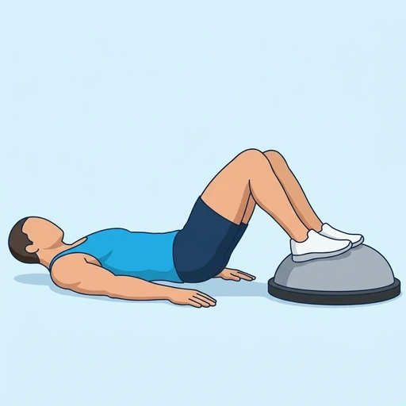
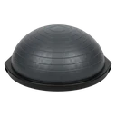

Balance Dome Glute Bridge
A glute bridge with both feet on a balance dome: lying on your back with your heels or soles on the domed top, you lift your hips until your body is straight from shoulders to knees. The unstable surface makes the glutes and hamstrings work harder to keep the hips level.
Upper legs · Balance Dome · Intermediate


Muscles worked by the Balance Dome Glute Bridge
Primary
Secondary
Also called: glute, glutes, gluteus maximus, buttocks, butt.
Equipment

Balance DomeAlso called: bosu ball, bosu, balance trainer, half ball, dome trainer, half stability ball.
How to do the Balance Dome Glute Bridge
- Lie on your back on the floor with your knees bent and place both feet on the top of a balance dome with the domed side up.
- Rest your arms flat on the floor beside you with your palms down.
- Brace your trunk and press through your feet to lift your hips off the floor.
- Raise your hips until your body forms a straight line from your shoulders to your knees.
- Squeeze your glutes at the top and keep your hips level while the dome moves under your feet.
- Lower your hips slowly to the floor and repeat for the planned repetitions.
Form tips
- Press your whole foot into the dome rather than only the heel, which keeps the surface steadier.
- Do not arch your lower back at the top; finish the lift with your glutes.
- Master the floor glute bridge first and move your feet closer to the dome only when you can keep your hips level.
At a glance
| Body part | Upper legs |
|---|---|
| Category | Strength |
| Force type | Push |
| Mechanic | Compound |
| Difficulty | Intermediate |
| Equipment | Balance Dome |
| Goals | Strength, Hypertrophy |
| Tags | Glute focus, Leg day, Lower back safe, Knee safe, Shoulder safe, No axial load |
| MET | 6.0 (metabolic equivalent, for calorie estimates) |
| Unilateral | No |
| Bodyweight | No |
| Dataset id | balance-dome-glute-bridge |
Balance Dome Glute Bridge in German & Spanish
| German | Balance-Dome Glute Bridge |
|---|---|
| Spanish | Puente de Glúteos sobre Domo de Equilibrio |
Descriptions, instructions and tips ship in all three languages in the JSON.
Related exercises
Exercise data (JSON)
The record below is exactly what exercises.json ships for this exercise — names, descriptions, instructions and tips in English, German and Spanish.
{
"id": "balance-dome-glute-bridge",
"name_en": "Balance Dome Glute Bridge",
"name_de": "Balance-Dome Glute Bridge",
"name_es": "Puente de Glúteos sobre Domo de Equilibrio",
"description_en": "A glute bridge with both feet on a balance dome: lying on your back with your heels or soles on the domed top, you lift your hips until your body is straight from shoulders to knees. The unstable surface makes the glutes and hamstrings work harder to keep the hips level.",
"description_de": "Eine Glute Bridge mit beiden Füßen auf einem Balance-Dome: Du liegst auf dem Rücken, Fersen oder Fußsohlen auf der gewölbten Oberseite, und hebst die Hüfte, bis dein Körper von den Schultern bis zu den Knien gerade ist. Die instabile Fläche zwingt Gesäßmuskeln und Beinbeuger, härter zu arbeiten, um die Hüfte waagerecht zu halten.",
"description_es": "Un puente de glúteos con ambos pies sobre un domo de equilibrio: tumbado boca arriba con los talones o las plantas sobre la parte superior abombada, subes las caderas hasta que el cuerpo queda recto desde los hombros hasta las rodillas. La superficie inestable obliga a los glúteos y a los isquiotibiales a trabajar más para mantener las caderas niveladas.",
"category": "strength",
"force_type": "push",
"mechanic": "compound",
"difficulty": "intermediate",
"equipment": "bosu_ball",
"body_part": "upper_legs",
"primary_muscles": [
"gluteus_maximus"
],
"secondary_muscles": [
"gluteus_medius",
"hamstrings",
"transverse_abdominis"
],
"goals": [
"strength",
"hypertrophy"
],
"tags": [
"glute_focus",
"leg_day",
"lower_back_safe",
"knee_safe",
"shoulder_safe",
"no_axial_load"
],
"variation_group": "hip-thrust",
"is_unilateral": false,
"is_bodyweight": false,
"instructions_en": [
"Lie on your back on the floor with your knees bent and place both feet on the top of a balance dome with the domed side up.",
"Rest your arms flat on the floor beside you with your palms down.",
"Brace your trunk and press through your feet to lift your hips off the floor.",
"Raise your hips until your body forms a straight line from your shoulders to your knees.",
"Squeeze your glutes at the top and keep your hips level while the dome moves under your feet.",
"Lower your hips slowly to the floor and repeat for the planned repetitions."
],
"instructions_de": [
"Lege dich mit gebeugten Knien auf den Rücken auf den Boden und stelle beide Füße auf die Oberseite eines Balance-Domes, dessen gewölbte Seite nach oben zeigt.",
"Lege die Arme mit den Handflächen nach unten flach neben dich auf den Boden.",
"Spanne den Rumpf an und drücke dich über die Füße ab, um die Hüfte vom Boden zu heben.",
"Hebe die Hüfte, bis dein Körper von den Schultern bis zu den Knien eine gerade Linie bildet.",
"Spanne oben die Gesäßmuskeln an und halte die Hüfte waagerecht, während der Dome unter deinen Füßen nachgibt.",
"Senke die Hüfte langsam zum Boden ab und wiederhole für die geplante Anzahl an Wiederholungen."
],
"instructions_es": [
"Túmbate boca arriba en el suelo con las rodillas flexionadas y coloca ambos pies sobre la parte superior de un domo de equilibrio, con el lado abombado hacia arriba.",
"Apoya los brazos planos en el suelo a tus costados con las palmas hacia abajo.",
"Contrae el tronco y empuja con los pies para despegar las caderas del suelo.",
"Sube las caderas hasta que el cuerpo forme una línea recta desde los hombros hasta las rodillas.",
"Aprieta los glúteos arriba y mantén las caderas niveladas mientras el domo se mueve bajo tus pies.",
"Baja las caderas despacio hasta el suelo y repite el número de repeticiones previsto."
],
"tips_en": [
"Press your whole foot into the dome rather than only the heel, which keeps the surface steadier.",
"Do not arch your lower back at the top; finish the lift with your glutes.",
"Master the floor glute bridge first and move your feet closer to the dome only when you can keep your hips level."
],
"tips_de": [
"Drücke den ganzen Fuß in den Dome statt nur die Ferse; das hält die Fläche ruhiger.",
"Gehe oben nicht ins Hohlkreuz; beende das Heben mit dem Gesäß.",
"Beherrsche zuerst die Glute Bridge am Boden und rücke die Füße erst näher an den Dome, wenn du die Hüfte waagerecht halten kannst."
],
"tips_es": [
"Empuja con todo el pie contra el domo y no solo con el talón; así la superficie se mantiene más estable.",
"No arquees la zona lumbar arriba; termina la subida con los glúteos.",
"Domina primero el puente de glúteos en el suelo y acerca los pies al domo solo cuando puedas mantener las caderas niveladas."
],
"met": 6.0,
"images": {
"flat": {
"start": "images/flat/balance-dome-glute-bridge-start.webp",
"peak": "images/flat/balance-dome-glute-bridge-peak.webp"
}
}
}Fetch just this exercise
const { exercises } = await fetch(
"https://exercise-dataset.com/exercises.json"
).then(r => r.json());
const ex = exercises.find(e => e.id === "balance-dome-glute-bridge");Free for personal and commercial in-app use with attribution (“Exercise data by RepDB”) — see the license and ready-made attribution snippets. Redistributing the data as a dataset or API is not permitted.